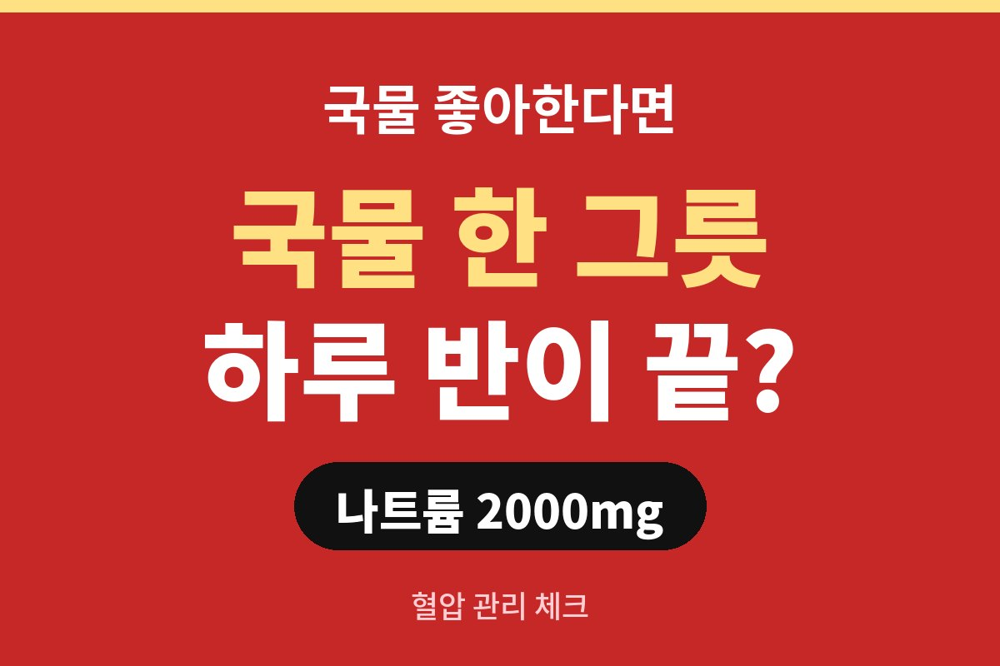

나트륨 하루 섭취량은 세계보건기구 기준으로 2,000mg 미만, 소금으로 치면 약 5g이 권고돼요. 그런데 국물 요리 한 그릇에 하루 기준의 상당 부분이 들어 있을 수 있다고 알려져 있습니다.
국물 없으면 밥이 안 넘어가는 직장인이라면 오늘 점심, 이미 기준을 넘긴 건 아닐까요?
2,000mg이라고 하면 감이 잘 안 오죠. 소금 한 티스푼이 채 안 되는 양이라고 보시면 쉬워요. 우리가 먹는 음식 곳곳에 이미 소금이 들어 있기 때문에, 따로 소금을 뿌려 먹지 않아도 금방 채워집니다.
문제는 한국 식단이에요. 찌개, 국, 라면, 김치, 젓갈, 장아찌처럼 짠 반찬이 한 상에 같이 올라오는 경우가 많거든요. 한 끼만 먹어도 기준에 가까워질 수 있다는 얘기가 괜히 나오는 게 아니에요.
| 권고 기준 | 나트륨 2,000mg 미만 (소금 약 5g) |
| 흔한 주범 | 국물, 라면, 김치, 젓갈, 가공식품 |
| 가장 쉬운 시작 | 국물은 건더기 위주로 먹기 |
간은 건더기보다 국물에 훨씬 많이 녹아 있어요. 건더기만 건져 먹고 국물을 남기면 나트륨 섭취를 꽤 줄일 수 있다고 알려져 있습니다. 반대로 국물까지 싹 비우면 그만큼 짠 맛을 다 마시는 셈이죠.
특히 라면이나 칼국수, 해장국처럼 국물이 많은 메뉴는 한 번 먹으면 하루 기준을 훌쩍 넘기기도 해요. 맛있다고 숟가락이 계속 가는 순간이 사실 제일 위험한 때입니다.
나트륨을 많이 먹으면 몸이 수분을 붙잡고 있으려고 해서 혈액량이 늘고, 그만큼 혈관에 부담이 가요. 그래서 짜게 먹는 습관이 혈압을 높이는 요인 중 하나로 꼽힙니다. 40·50대에 접어들면서 혈압 수치가 슬금슬금 오르는 분들은 식습관부터 돌아보는 게 좋아요.
저녁마다 얼굴이나 다리가 붓고, 자꾸 목이 마르다면 전날 짜게 먹은 건 아닌지 떠올려 보세요. 물론 붓는 이유는 여러 가지라서, 이런 증상이 계속되면 혼자 판단하지 말고 병원에서 확인하는 게 안전해요.
거창한 다이어트가 아니라 습관 세 가지만 바꿔도 충분해요. 첫째, 국물은 건더기 위주로 먹고 남기기. 둘째, 김치와 젓갈은 한꺼번에 많이 덜지 않기. 셋째, 물을 충분히 마시고 채소나 과일처럼 칼륨이 든 음식을 같이 챙기기.
식당에서는 "싱겁게 해 주세요"라고 한마디 하는 것도 방법이에요. 가공식품을 살 땐 포장지 영양성분표에서 나트륨 수치를 한 번만 훑어봐도 선택이 달라집니다. 처음엔 싱겁게 느껴져도 몇 주만 지나면 입맛이 금방 적응해요.
오늘 드신 국물, 몇 숟가락이나 남기셨나요? 댓글로 알려 주시고, 이런 건강 정보가 도움이 되셨다면 구독해 주세요.
※ 이 글은 일반적인 건강 정보이며 진단·치료를 대신하지 않습니다. 증상이 있다면 반드시 전문의와 상담하세요.